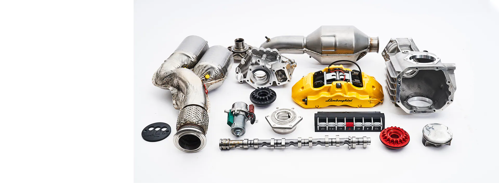

REPAROS CERTIFICADOS E PEÇAS SOBRESSALENTES ORIGINAIS
Você pode contar com o serviço de pós-venda da Lamborghini para oferecer excelente qualidade, confiabilidade
e
desempenho em qualquer condição, graças ao suporte qualificado de nossa rede oficial de revendedores e
pontos de
serviç
da Lamborghini.
Técnicos certificados garantem um serviço orientado para a manutenção da integridade do seu veículo para
garantir
uma
funcionalidade impecável e perfeita independentemente da idade e quilometragem.
Se o seu veículo necessitar de trabalhos de reparação ou restauro, apenas serão utilizadas peças
sobressalentes
originais e de acordo com as especificações do fabricante para garantir os mais elevados padrões de
qualidade.

PEÇAS SOBRESSALENTES ORIGINAIS
Nosso objetivo sempre foi satisfazer e superar as expectativas de nossos clientes em termos de qualidade e
serviço e
nossas peças de reposição são construídas e distribuídas para refletir esse objetivo.
Preservar a eficiência do seu Lamborghini significa preservar a sinergia entre os elementos.
A única solução para manter intacta a superioridade e exclusividade do seu veículo ao longo do tempo é usar
peças de
reposição originais. Somente componentes que atendam às especificações de cada modelo podem restaurar o
veículo aos seus
altos níveis originais de conforto e eficiência para um ótimo desempenho, qualidade e segurança.